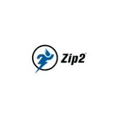

1990-е: Начало пути
- 🌐 1996 — Zip2: Первый стартап Маска (онлайн-гид для газет)
- 💰 1999 — Продажа Zip2 за $307 млн (Compaq)
- 💳 1999 — Основание X.com (позже ставший PayPal)
- 📈 2002 — Продажа PayPal eBay за $1.5 млрд
- 🚀 Значение — Стартовый капитал для SpaceX и Tesla